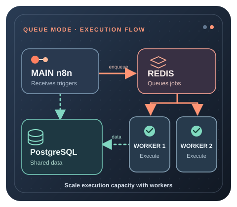

Останете в обикновен режим, когато
Една инстанция се справя удобно с пиковите изпълнения, а CPU, RAM и забавянето остават стабилни. Режимът с опашка добавя компоненти, от които още нямате нужда.
МАЩАБИРАНЕ
Режимът с опашка отделя изпълнението на работните процеси от основния процес на n8n. Основната инстанция приема задействанията и създава изпълнения, Redis координира опашката, работниците изпълняват задачите, а PostgreSQL съхранява споделените данни за процесите и изпълненията.

БЪРЗО РЕШЕНИЕ
Една инстанция се справя удобно с пиковите изпълнения, а CPU, RAM и забавянето остават стабилни. Режимът с опашка добавя компоненти, от които още нямате нужда.
Постоянно паралелните изпълнения създават конкуренция за ресурси, забавянето расте при натоварване или трябва да добавите капацитет за изпълнение чрез няколко работника.
Ограничението е просто недостатъчно CPU или RAM, а една по-голяма инстанция може надеждно да обслужва натоварването.
Използвайте пиковата едновременност, CPU, RAM, продължителността на изпълненията, дължината на опашката и натоварването на базата данни, за да обосновете промяната.
АРХИТЕКТУРА
ОСНОВНИ ИЗИСКВАНИЯ
Всички основни процеси и работници трябва да имат надежден достъп до услугата Redis, използвана за координиране на опашката.
Основната инстанция и работниците трябва да споделят базата данни. Режимът с опашка е разпределена архитектура и не трябва да се изгражда върху SQLite.
Основната инстанция и работниците трябва да работят в режим с опашка и да споделят настройките за достъп до Redis, PostgreSQL и шифрованите идентификационни данни.
Работниците се нуждаят от достатъчно CPU и RAM за изпълняваните процеси. Добавянето на процеси не премахва разхода на ресурси за всяко изпълнение.
Включете режим с опашка в съществуваща самостоятелно хоствана система. Първо потвърдете, че основната услуга на n8n и всеки работник могат да достигнат една и съща база PostgreSQL и Redis през частна мрежа. Задайте EXECUTIONS_MODE=queue и в основната инстанция, и в работниците, и предоставете QUEUE_BULL_REDIS_HOST=redis и QUEUE_BULL_REDIS_PORT=6379 когато redis е действителното име на вашата Compose услуга. Използвайте DB_TYPE=postgresdb, DB_POSTGRESDB_HOST=postgres и съответстващи DB_POSTGRESDB_DATABASE, DB_POSTGRESDB_USER и DB_POSTGRESDB_PASSWORD за всеки процес; заменете примерните имена на услуги със своите. Предоставете точно съществуващия N8N_ENCRYPTION_KEY на всички. Не публикувайте портове на Redis или PostgreSQL на хоста само за да свържете контейнери в една Compose мрежа.
Стартирайте изпълнител, а не втори редактор. Добавете n8n worker услуга със същата фиксирана версия на образа на n8n и споделени настройки като основната инстанция, но я стартирайте с командата worker . Ако сте нарекли тази услуга n8n-worker, стартирайте я чрез docker compose up -d n8n-worker. След като потвърдите действителното изпълнение на един работник, можете да използвате docker compose up -d --scale n8n-worker=2 за стартиране на втори работник от същата услуга. Това са допълнения към вече съществуваща и правилно конфигурирана Compose система, а не самостоятелен инсталационен файл; запазете съществуващите постоянни томове, HTTPS прокси, тайни и резервни копия.
Част от Compose конфигурация за режим с опашка към съществуваща система. Добавете примера по-долу в текущия си compose.yaml; той не е пълна самостоятелна инсталация. Предполага се, че вече имате постоянни, частни услуги postgres и n8n , съществуваща фиксирана версия N8N_VERSION в средата си, както и собствени защитени POSTGRES_PASSWORD и оригинален N8N_ENCRYPTION_KEY. Съгласувайте имената, томовете, базата данни и версията на n8n със съществуващия проект. Добавете настройките за Redis в режим с опашка и EXECUTIONS_MODE=queue и към съществуващата основна услуга, както е описано по-горе.
# Merge with the existing services; do not replace your full Compose file.
services:
redis:
image: redis:7-alpine
command: ["redis-server", "--appendonly", "yes"]
restart: unless-stopped
volumes:
- redis_data:/data
n8n-worker:
image: docker.n8n.io/n8nio/n8n:${N8N_VERSION}
command: worker --concurrency=5
restart: unless-stopped
environment:
EXECUTIONS_MODE: queue
QUEUE_BULL_REDIS_HOST: redis
DB_TYPE: postgresdb
DB_POSTGRESDB_HOST: postgres
DB_POSTGRESDB_DATABASE: n8n
DB_POSTGRESDB_USER: n8n
DB_POSTGRESDB_PASSWORD: ${POSTGRES_PASSWORD}
N8N_ENCRYPTION_KEY: ${N8N_ENCRYPTION_KEY}
depends_on:
- redis
- postgres
volumes:
redis_data:
В този фрагмент няма публикуван порт на хоста за Redis или работника. Постоянното записване на Redis във файл е допълнителен слой за възстановяване, а не заместител на резервните копия извън сървъра. Запазете съществуващата конфигурация за HTTPS и удостоверяване без промени. За Code възли, които изискват външни изпълнители на задачи, настройте изпълнителите отделно за работниците; самият режим с опашка не замества тези изпълнители.
Преобразувате съществуваща инстанция със SQLite? Не променяйте просто DB_TYPE и не стартирайте срещу празна база PostgreSQL: това не мигрира старите работни процеси и идентификационни данни. Преди преминаване архивирайте изходната база, постоянната директория .n8n и оригиналния ключ за шифроване; използвайте поддържана процедура за експорт/импорт или миграция на n8n, след което проверете процесите и шифрованите идентификационни данни в отделна целева инстанция. Пазете оригиналните файлове за връщане назад и използвайте свързаното по-долу ръководство за архивиране и възстановяване. Никога не изтривайте database.sqlite като пряк път.
ЕДНОВРЕМЕННО ИЗПЪЛНЕНИЕ НА РАБОТНИЦИТЕ
Всеки работник може да обработва няколко задачи едновременно. Текущата стойност по подразбиране на n8n е 10 едновременни задачи на работник, а документацията препоръчва 5 или повече. Много работници с твърде ниска едновременност могат да създадат излишни връзки към базата и да изчерпят пула от връзки.
Работникът разполага със свободни CPU и RAM, а задачите основно изчакват външни услуги вместо да изчерпват изчислителната мощност или паметта.
Един работен процес става ограничението, а базата данни, Redis и инфраструктурата имат капацитет за още паралелни изпълнения.
Отделните процеси използват много памет или CPU и паралелните задачи причиняват конкуренция за ресурси, OOM или нестабилни времена на изпълнение.
Повече работници и по-голяма едновременност увеличават активността в базата. Мащабирането на изпълненията без ресурс за базата може само да премести ограничението.
Знайте кой лимит за едновременност действително се прилага. Работник може да бъде стартиран чрез n8n worker --concurrency=5или равностойната команда за работник във вашата Compose услуга. Ако N8N_CONCURRENCY_PRODUCTION_LIMIT е изрично зададена със стойност, различна от -1, тази настройка има предимство в режим с опашка; иначе n8n използва стойността --concurrency на работника или подразбиращата се стойност 10. Не умножавайте броя работници по номиналния лимит и не го наричайте гарантирана производителност: реалният капацитет зависи от продължителността на задачите, CPU, паметта, външните API и връзките към PostgreSQL.
УЕБХУКОВЕ
Основният или уебхук процес приема HTTP заявката, но работникът изпълнява процеса. Предаването през Redis добавя известно забавяне. За чувствителни към латентността уебхукове измервайте времето за отговор от край до край, вместо да приемате, че повече работници автоматично ускоряват всяка заявка.
Насочвайте трафика на уебхуковете към правилния процес. При отделни процесори за n8n webhook зад обратен прокси или балансировчик насочвайте продукционните маршрути /webhook/* и /webhook-waiting/* към уебхук процесорите; оставете /webhook-test/*, заявките за редактора и API към основната инстанция. Не добавяйте основната инстанция към пула за балансиране на продукционните уебхукове, освен ако съзнателно приемате допълнителното натоварване. Работен процес с възел Respond to Webhook може да държи клиента в изчакване, докато работникът приключи и върне отговора, затова режимът с опашка не обещава незабавни HTTP отговори или липса на изтекли времена за изчакване. Тествайте действителното външно обратно извикване и поведението на отговора, преди да пренасочите трафика.
БИНАРНИ ДАННИ
Режимът с опашка не поддържа съхранение на бинарни данни във файловата система като общ модел за постоянно съхранение между разпределени работници.
Когато процесите трябва да съхраняват бинарни данни за няколко разпределени работника, използвайте хранилище, достъпно за всички необходими инстанции, например поддържано външно обектно хранилище.
Отговорите на работниците се връщат към приемащия процес. Големите тела на отговорите могат да увеличат натоварването на паметта на Redis и да изискват специална конфигурация за съхранение.
Натоварване, което силно зависи от локални файлове, трябва да се преработи за споделено постоянно съхранение, преди работниците да бъдат разположени на различни машини.
Ограничение за големи отговори на уебхукове. Актуалната документация на n8n задава за N8N_WEBHOOK_RESPONSE_RELAY_SIZE_MAX стойност по подразбиране 64 MiB за отговор на работник, връщан през опашката. Redis може да държи няколко копия в движение, затова предвидете приблизително 1.5 пъти размера на отговора в паметта на Redis за всеки едновременен голям отговор. Без отделно съхранение прекалено голям отговор се проваля, вместо магически да се ускори чрез добавяне на работници.
Ограничения на версията и лиценза. От n8n 2.34.0, работниците могат да използват N8N_WEBHOOK_RESPONSE_RELAY_OFFLOAD_ENABLED=true , за да записват прекалено големите тела на отговори в достъпно споделено хранилище за бинарни данни, но първо актуализирайте всички основни и уебхук процесори до 2.34.0 или по-нова версия. Избраният N8N_DEFAULT_BINARY_DATA_MODE трябва действително да съхранява данни и да е четим от всички участващи процеси. Външното съхранение в S3 и Azure изисква валиден лиценз за самостоятелно хоствано издание Business или Enterprise ; не приемайте, че Community Edition може да го активира. Бинарният режим database може да съхрани отделно прекалено голям отговор без платено външно хранилище, но основната инстанция зарежда цялото тяло в паметта, а базата данни има собствен лимит за размер на файловете. Конкретно за отделно съхранение на тялото на отговоритеn8n описва и споделена файлова система , когато всички инстанции монтират един и същ диск, но изрично не препоръчва тази конфигурация. Не бъркайте този специален маршрут за съхранение на отговори с поддръжка на постоянно съхранение на бинарни данни във файловата система при разпределен режим с опашка. Проверете изданието, версията и настройките за съхранение преди включване.
НАБЛЮДЕНИЕ
Опашка, която расте по-бързо, отколкото работниците я изпразват, показва недостатъчен капацитет за изпълнение или друго ограничение по веригата.
Измервайте натоварването и пиковата памет за всеки работник. Свободни работници при растяща опашка сочат към друго ограничение.
Следете времето между създаване на изпълнението и реалното му начало, а не само продължителността на самия процес.
Крайните точки за състояние на работниците могат да показват дали работникът е активен и дали връзките му с базата и Redis са готови.
Проверете изпълнение върху работник, а не само работещ контейнер. При правилно конфигуриран Compose проект проверете docker compose ps и docker compose logs --tail=100 n8n-worker (заменете името на услугата, ако е друго). Изпълнете безвреден публикуван продукционен процес чрез задействане по график или тестов уебхук, след което свържете изпълнението му в изгледа Executions на n8n с действителната обработка в логовете на работника. Успешно отваряне на редактора, работещ Redis контейнер или задача в опашката не доказва, че работникът е изпълнил задачата.
Проверете зависимостите и готовността. При стандартните примерни имена на услугите, docker compose exec -T redis redis-cli ping трябва да върне PONG , когато удостоверяването на Redis го допуска, а docker compose exec -T postgres pg_isready -U n8n -d n8n проверява готовността на PostgreSQL (адаптирайте идентификационните данни и имената на услугите). Включете QUEUE_HEALTH_CHECK_ACTIVE=true за работник, когато са необходими частните крайни точки /healthz и /healthz/readiness ; крайната точка за готовност проверява свързаността с Redis и базата. Не излагайте тези крайни точки на работниците публично само заради наблюдението.
Ръчните изпълнения са различен тест. По подразбиране OFFLOAD_MANUAL_EXECUTIONS_TO_WORKERS=false, така че ръчно стартиран процес от редактора може да се изпълни в основната инстанция дори при правилен режим с опашка. Задайте true само ако искате ръчните изпълнения да се изпращат към работници и сте проверили промяната в тестова среда. Работниците в режим с опашка се различават и от външните изпълнители на задачи на n8n, които имат отделни изисквания за конфигурация при Code възли.
ПЪТ ЗА МАЩАБИРАНЕ
Партньорска връзка: възможно е да получим комисиона от покупките.
ГРАНИЦИ НА ВИСОКАТА ДОСТЪПНОСТ
Всеки работник трябва да използва същия N8N_ENCRYPTION_KEY като основната инстанция, за да дешифрира идентификационните данни, необходими на процесите.
Основните, уебхук и работните процеси трябва да използват една и съща версия на n8n. Смесените версии могат да предизвикат несъвместимо поведение при поетапни актуализации.
Когато обемът на входящите уебхукове стане ограничението, отделни уебхук процесори могат да работят зад балансировчик, докато работниците изпълняват задачите. Не добавяйте този слой без измерена нужда.
Стартирането на няколко основни процеса за висока достъпност не е същото като обикновения режим с опашка. n8n документира multi-main като функция на самостоятелно хостваното издание Enterprise с допълнителни изисквания към балансировчика и сесиите.
Официална архитектура и конфигурация на режима с опашка
ЧЗВ
Да. Redis е брокерът на съобщения, който координира чакащите изпълнения между основната инстанция и работниците.
Не при разпределената архитектура с опашка. Основната инстанция и работниците се нуждаят от споделен достъп до база данни и n8n документира PostgreSQL за тази конфигурация.
Няма универсален брой. Започнете от измерената едновременност и натоварването на работниците, после увеличавайте капацитета, като следите PostgreSQL, Redis, CPU, RAM и дължината на опашката.
Това е броят задачи, които един работник може да обработва паралелно. Текущата стойност по подразбиране е 10, а n8n препоръчва едновременност 5 или повече, вместо много работници с ниска едновременност.
Само когато натоварването го оправдава. Малка инсталация, която работи добре като една инстанция, обикновено е по-лесна за управление без Redis и отделни работници.
Изисквания към VPS · VPS планове и избор на ресурси · Сигурност в продукционна среда · Архивиране и възстановяване · Основно ръководство за VPS за n8n
За избор на доставчик, инсталиране с едно щракване, обхват на поддръжката, архивиране, миграция, регион и мащабиране използвайте сравнението на най-добрите VPS за n8n. За избор на ресурси се върнете към основното ръководство за VPS за n8n.